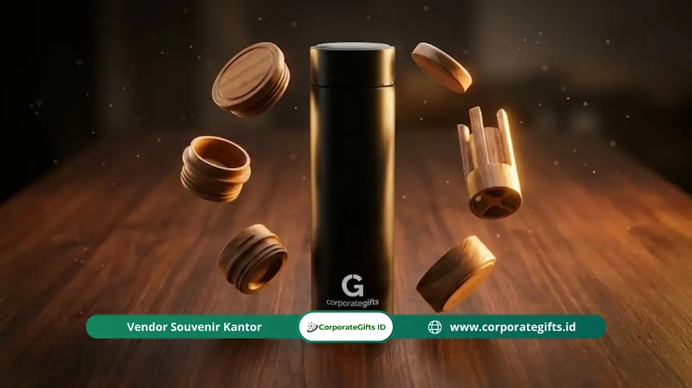

Corporate Gifts ID - Welcome kit ramah lingkungan adalah paket sambutan untuk karyawan baru yang berisi barang-barang berbahan berkelanjutan, seperti tumbler aksen bambu, notebook daur ulang, dan tote bag kanvas, sebagai pengganti merchandise plastik sekali pakai. Konsep ini dipilih karena lebih tahan lama, mengurangi limbah kantor, dan memperkuat citra perusahaan sebagai entitas bisnis yang peduli kelestarian bumi sejak hari pertama karyawan bergabung.
Pernahkah Anda membayangkan apa yang dirasakan karyawan baru saat hari pertama mereka menginjakkan kaki di kantor? Ada rasa antusiasme tinggi, namun secara bersamaan ada proses evaluasi bawah sadar terhadap budaya dan nilai profesional institusi tempat mereka bernaung.
Bayangkan skenario yang mengecewakan: karyawan baru menerima sekotak suvenir plastik murah yang tidak memiliki nilai fungsi, yang pada akhirnya hanya menumpuk di laci atau berakhir di tempat pembuangan sampah dalam hitungan minggu. Memberikan new employee welcome kit bukan sekadar membagikan cinderamata seremonial, melainkan menanamkan fondasi nilai, identitas korporat, dan apresiasi emosional pertama bagi talenta terbaik Anda.
Poin Kunci Welcome Kit Karyawan Eco-Friendly:
- Investasi Nilai & Budaya: Paket sambutan onboarding mencerminkan komitmen Environmental, Social, and Governance (ESG) perusahaan secara konkret.
- Material Alami Berkelanjutan: Mengganti plastik konvensional dengan bahan bambu, serat gandum (wheat straw), kertas daur ulang, kanvas, dan kayu.
- Penguatan Employer Branding: Merchandise estetik mendorong karyawan baru membagikan momen onboarding di media sosial (LinkedIn/Instagram), memperkuat reputasi tempat kerja idaman.
- Kemasan Bebas Plastik: Penggunaan corrugated box bergelombang dengan pelindung kertas sarang lebah (honeycomb paper) yang ramah daur ulang.
Pentingnya Konsep Ramah Lingkungan pada Onboarding Karyawan
Di era ketika kesadaran lingkungan menjadi tolok ukur reputasi modern, mengabaikan aspek keberlanjutan dalam proses penerimaan karyawan adalah langkah mundur yang berisiko bagi citra perusahaan.
Perusahaan tentu tidak ingin dinilai kuno atau tidak peka terhadap isu global. Ide welcome kit karyawan yang dirancang cermat bukan hanya sekadar pemberian fisik, melainkan investasi emosional pertama yang membentuk rasa bangga dan loyalitas kerja tim.
Panduan ini mengulas berbagai opsi paket souvenir promosi dan onboarding ramah lingkungan yang tidak hanya menjaga bumi, tetapi juga mengangkat citra first impression perusahaan Anda ke standar tertinggi.
Mengapa Beralih ke Konsep Eco-Friendly?
Mengapa tren corporate gift dan merchandise kantor kini bergeser drastis ke arah material alami dan bahan daur ulang? Dalam dinamika profesional saat ini, kredibilitas brand memegang peranan krusial.
Riset perilaku tenaga kerja modern menunjukkan bahwa generasi milenial dan Gen Z memiliki kebanggaan lebih tinggi ketika berkarir di perusahaan yang mempraktikkan tanggung jawab sosial dan kepedulian lingkungan secara nyata.
Ketika perusahaan membagikan suvenir plastik sekali pakai, secara tidak sadar pesan yang tersampaikan adalah kecenderungan pada solusi instan dan bernilai rendah. Sebaliknya, saat Anda menyajikan produk berbahan bambu, serat gandum, atau tekstil daur ulang, narasi yang terbangun adalah keseriusan institusi dalam menjaga masa depan, kualitas, dan detail.

Tumbler stainless steel matte dengan tutup kayu alami berukir logo perusahaan untuk gaya hidup zero waste di kantor.
Kurasi 6 Ide Welcome Kit Karyawan Ramah Lingkungan
Berikut adalah kurasi perlengkapan esensial yang memadukan fungsi produktivitas tinggi, nilai estetika elegan, dan prinsip ramah lingkungan:
1. Tumbler Stainless Beraksen Bambu atau Serat Gandum
Botol minum plastik sekali pakai telah usang. Penggunaan tumbler vacuum insulated berbahan food-grade stainless steel SUS 304 dengan tutup beraksen kayu bambu atau material serat gandum (wheat straw) menjadi pilihan terdepan.
- Keunggulan Material: Memiliki daya tahan sangat lama, bebas senyawa kimia berbahaya (BPA Free), serta mampu menjaga suhu minuman panas maupun dingin hingga 12 jam.
- Fungsi Nyata: Mengeliminasi tumpukan gelas plastik di area pantry kantor sekaligus menggalakkan kebiasaan hidup sehat dan zero waste.
- Personalisasi Eksklusif: Terapkan laser grafir presisi untuk menyematkan logo perusahaan dan nama personal karyawan agar tampilan terlihat mewah serta anti-luntur.
2. Buku Catatan (Notebook) Daur Ulang & Kraft Cover
Aktivitas mencatat instruksi kerja secara manual memiliki efektivitas kognitif yang tinggi. Buku catatan ramah lingkungan kini hadir dengan sentuhan estetika modern.
- Solusi Berkelanjutan: Pilih buku agenda dengan lembaran berbahan kertas daur ulang (recycled paper) dan sampul hardcover berbahan kraft tebal atau olahan serat alami.
- Sentuhan Emosional: Sisipkan lembar sambutan khusus di halaman pertama yang memuat visi misi perusahaan serta pesan selamat datang bertanda tangan jajaran pimpinan direksi.
3. Alat Tulis Berbahan Bambu dan Kertas Padat
Pulpen plastik konvensional adalah salah satu limbah kantor harian terbanyak. Beralih ke pulpen berbahan serat alam memberikan nuansa yang jauh lebih berkelas.
- Alternatif Elegan: Gunakan pulpen berbahan kayu bambu padat atau gulungan kertas daur ulang dengan mekanisme isi ulang (refillable).
- Set Perlengkapan: Padukan dengan pouch kanvas atau tempat alat tulis kayu untuk menciptakan paket stationery yang harmonis di atas meja kerja.
4. Tas Belanja (Tote Bag) Kanvas Tebal atau Goni Rustic
Tinggalkan goodie bag spunbond tipis yang mudah rusak. Untuk memperluas jangkauan promosi brand Anda ke ruang publik, tas kanvas berkualitas tinggi adalah media terbaik.
- Material Pilihan: Gunakan bahan baby canvas premium atau serat goni (jute) dengan jahitan kuat yang mampu menampung laptop dan dokumen kerja.
- Desain Tipografi Modern: Rancang ilustrasi grafis atau kutipan motivasi yang estetis sehingga karyawan merasa bangga mengenakannya dalam aktivitas harian di luar kantor.
5. Perlengkapan Makan (Cutlery Set) Kayu Alami
Mendukung kebiasaan membawa bekal makan siang sehat dengan menyediakan set sendok, garpu, dan sumpit kayu kelapa atau bambu dalam pouch kanvas praktis.
- Pesan Keberlanjutan: Mengajak karyawan menolak pemakaian alat makan plastik sekali pakai saat membeli makanan di luar kantor, menciptakan dampak lingkungan positif yang konsisten.
6. Aksesori Teknologi (Tech Accessories) dengan Sentuhan Alam
Perangkat gadget modern dapat diselaraskan dengan material alami melalui kurasi produk teknologi berkelanjutan:
- Flashdisk Kayu/Bambu: USB flash drive dengan casing kayu alami dan grafir logo korporat.
- Wireless Charging Stand Kayu: Dudukan pengisi daya nirkabel berbahan kayu yang mempercantik tata letak meja kerja.
- Mousepad Berbahan Gabus (Cork): Material gabus alami memberikan permukaan halus, tahan air, dan estetika meja yang hangat.
Tabel Perbandingan Produk Welcome Kit Eco-Friendly dan Manfaatnya
Berikut matriks evaluasi produk ramah lingkungan untuk membantu perencanaan pengadaan paket onboarding institusi Anda:
| Item Welcome Kit | Material Ramah Lingkungan | Kelebihan Fungsional | Teknik Personalisasi | Kisaran Budget Unit |
|---|---|---|---|---|
| Tumbler Vacuum | Stainless SUS 304 + Tutup Bambu Alami | Tahan panas/dingin 12 jam, zero plastic waste | Laser Engraving Presisi | Rp75.000 - Rp135.000 |
| Eco Notebook A5 | Kertas Daur Ulang + Hardcover Kraft | Kertas bebas klorin, nyaman untuk menulis harian | Deboss Logo / Sablon Eco | Rp35.000 - Rp65.000 |
| Bamboo Pen Set | Kayu Bambu Utuh + Tinta Refillable | Grip nyaman, dapat diisi ulang berulang kali | Laser Grafir Logo | Rp15.000 - Rp30.000 |
| Tote Bag Premium | Baby Canvas Katun Alami / Goni Jute | Kapasitas beban hingga 10 kg, dapat dicuci | Digital DTF Printing / Sablon | Rp40.000 - Rp75.000 |
| Cutlery Set | Kayu Mahoni / Bambu + Pouch Blacu | Food grade, higienis, mudah dibawa travel | Grafir Nama / Cetak Pouch | Rp25.000 - Rp45.000 |
Membangun Narasi Melalui Kemasan Berkelanjutan (Sustainable Packaging)
Kualitas isi welcome kit harus didukung dengan kemasan luar yang selaras dengan pesan ramah lingkungan:
- Kotak Kardus Bergelombang (Corrugated Hardbox): Gunakan kotak karton daur ulang berstruktur kokoh dengan finishing sablon satu warna yang minimalis dan elegan.
- Pelindung Sarang Lebah (Honeycomb Paper): Hindari penggunaan bubble wrap plastik secara berlebihan. Gantilah dengan kertas peredam sarang lebah atau serutan kertas daur ulang (shredded paper).
- Kartu Selamat Datang Edukatif: Sisipkan kartu ucapan yang menceritakan bahwa seluruh item dalam welcome kit ini dirancang untuk mendukung kelestarian bumi dan efisiensi energi.
Dampak pada Employer Branding dan Retensi Karyawan Baru
Pengeluaran anggaran untuk produk onboarding ramah lingkungan memberikan dampak psikologis dan reputasi yang sangat signifikan:
Karyawan yang merasa dihargai sejak hari pertama memiliki tingkat retensi dan keterikatan emosional (employee engagement) yang jauh lebih tinggi terhadap organisasi.
Selain itu, paket welcome kit yang estetik kerap diunggah secara sukarela oleh karyawan baru ke jejaring media sosial profesional seperti LinkedIn dengan tajuk sambutan karir baru. Hal ini menjadi media publikasi organik gratis yang memperkuat reputasi institusi Anda sebagai tempat berkarir yang bonafide, modern, dan berwawasan lingkungan.
Pertanyaan Seputar Welcome Kit Ramah Lingkungan (FAQ)
Kesimpulan dan Konsultasi Pengadaan Onboarding Kit
Menyambut anggota tim baru adalah langkah strategis dalam membangun loyalitas dan produktivitas jangka panjang. Hadirkan pengalaman onboarding yang berkesan, profesional, dan bertanggung jawab terhadap lingkungan bersama paket welcome kit eksklusif dari kami.
Jelajahi ragam produk di e-katalog resmi kami dan konsultasikan kebutuhan paket welcome kit custom perusahaan Anda bersama konsultan berpengalaman di Corporate Gifts ID sekarang juga.